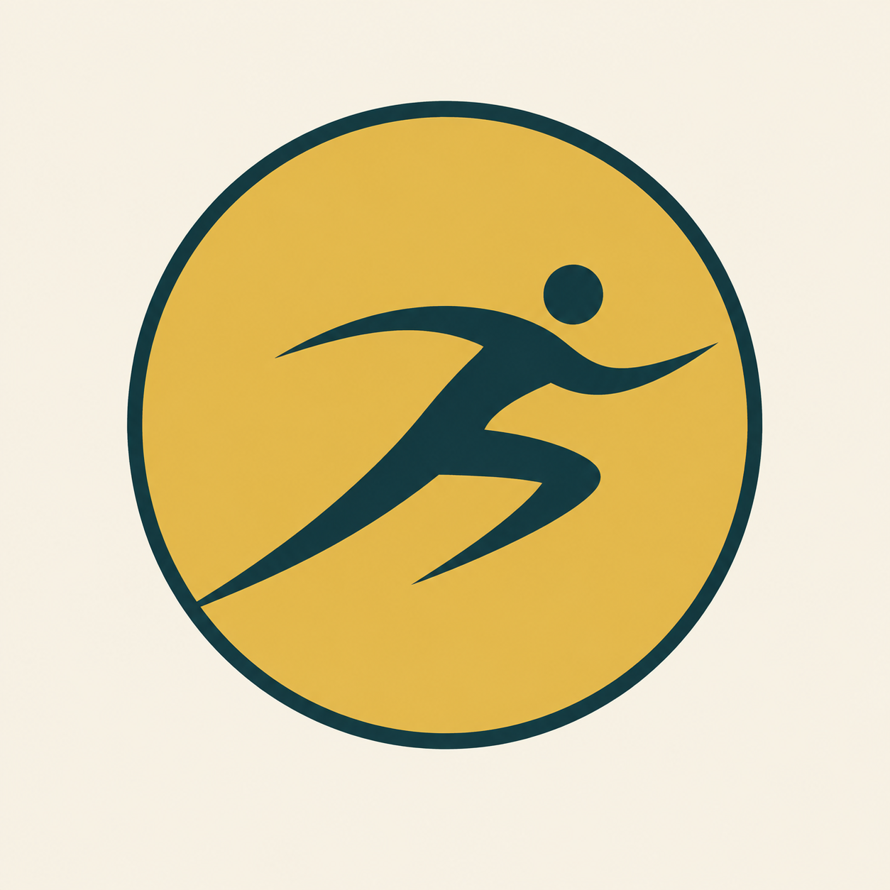
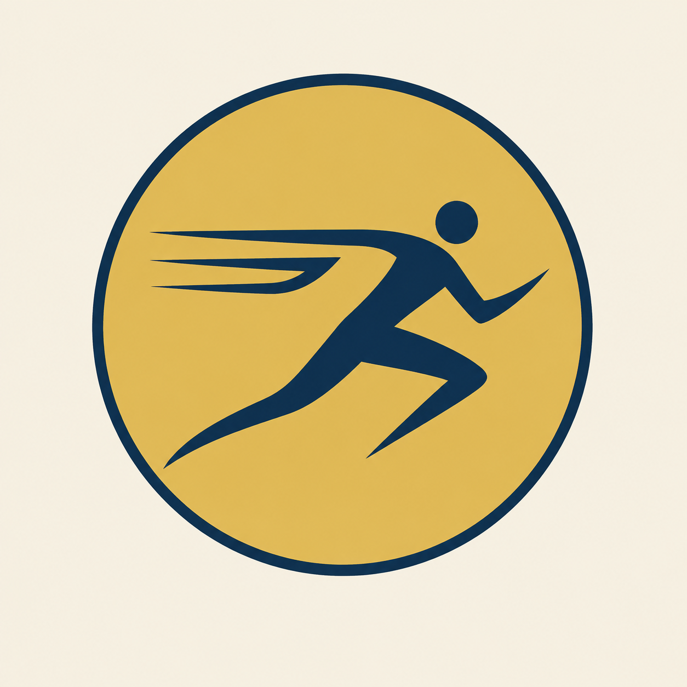
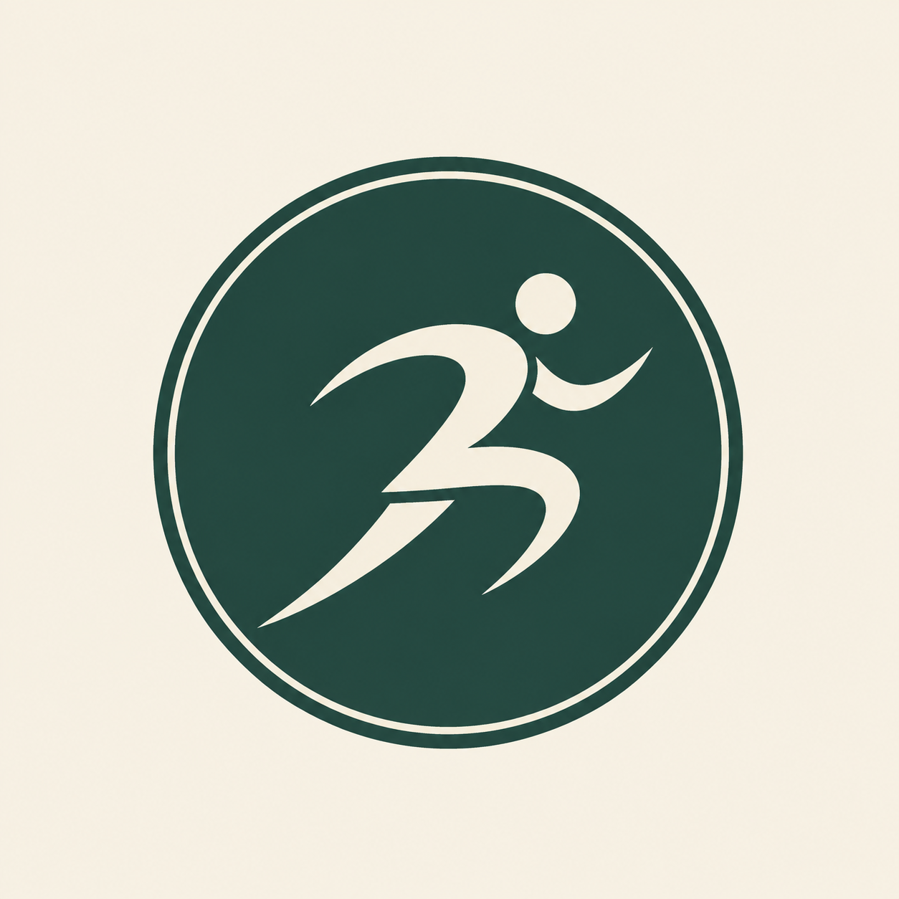
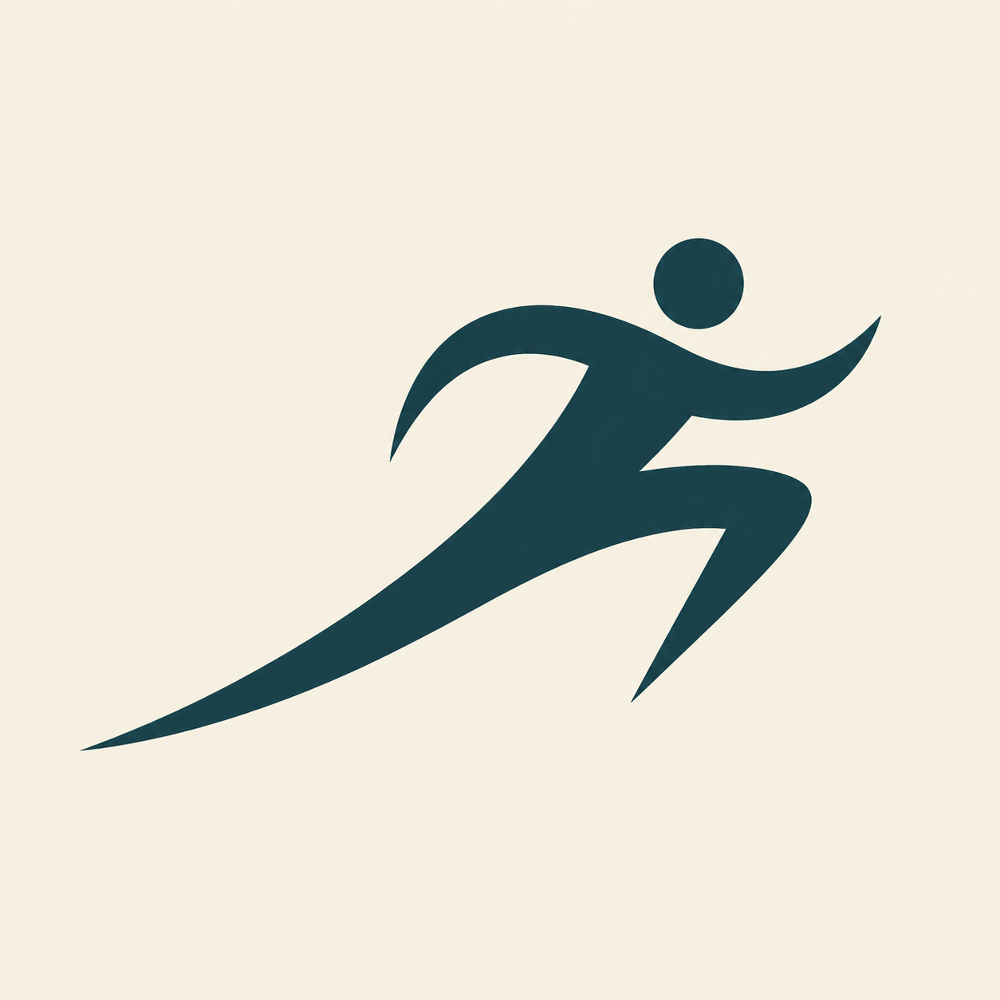
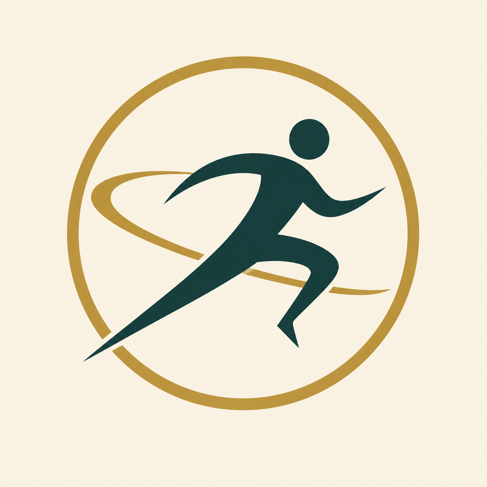
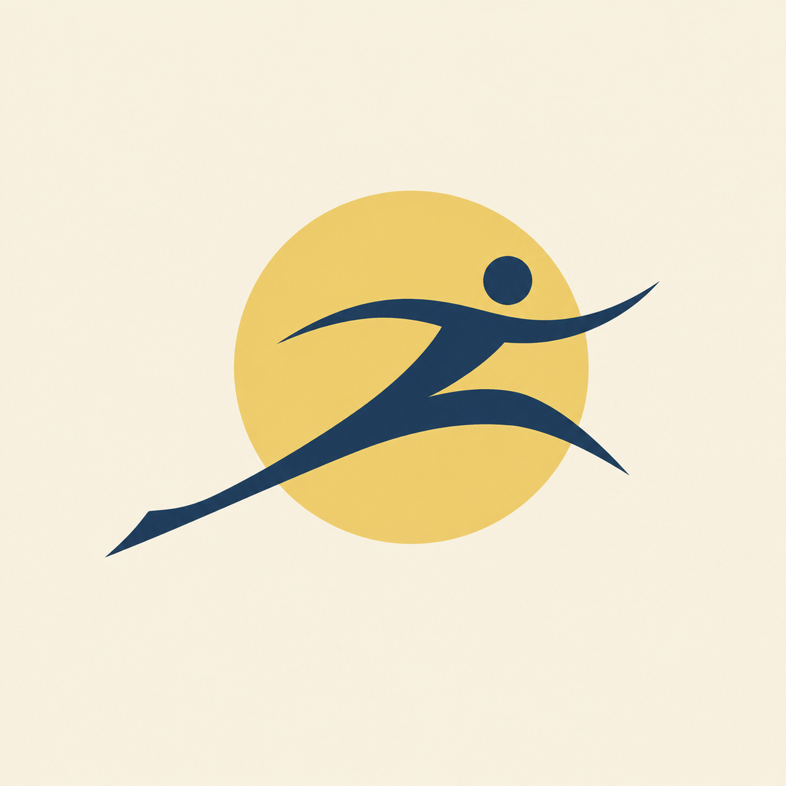
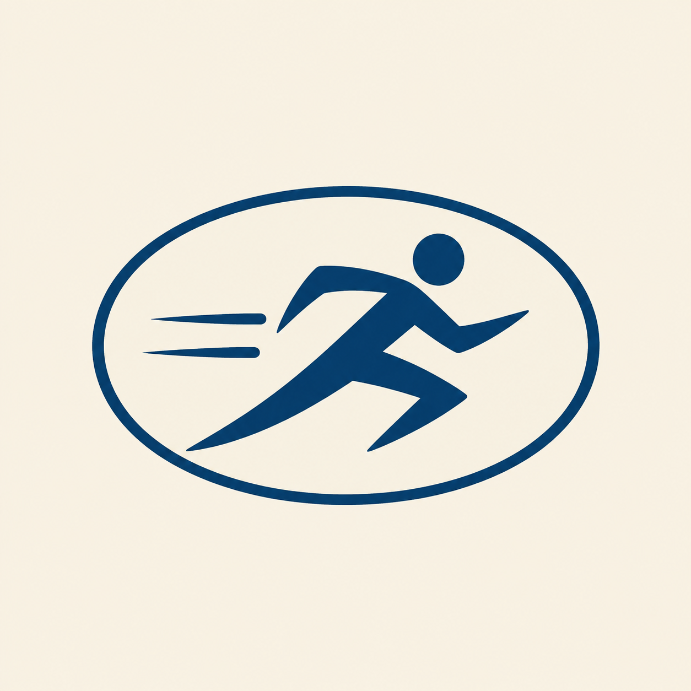
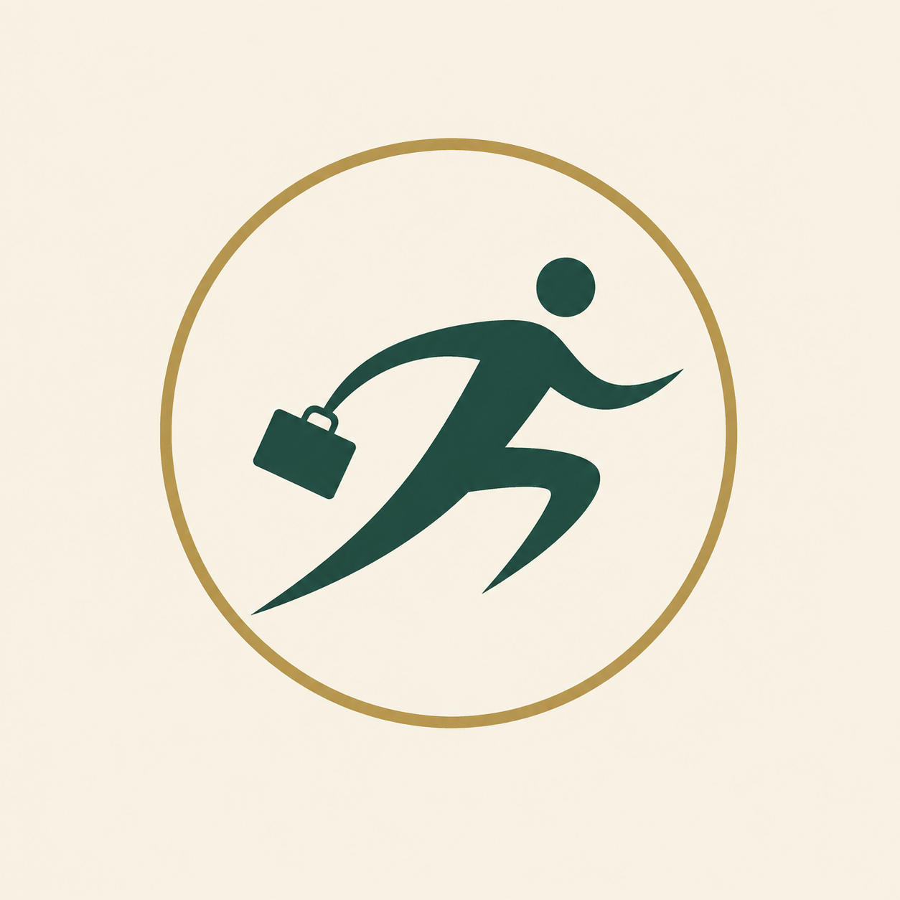
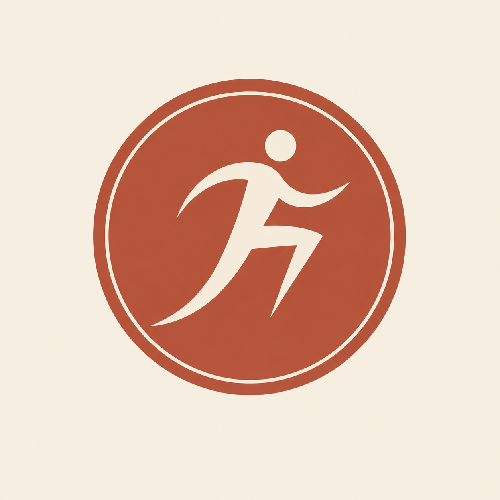
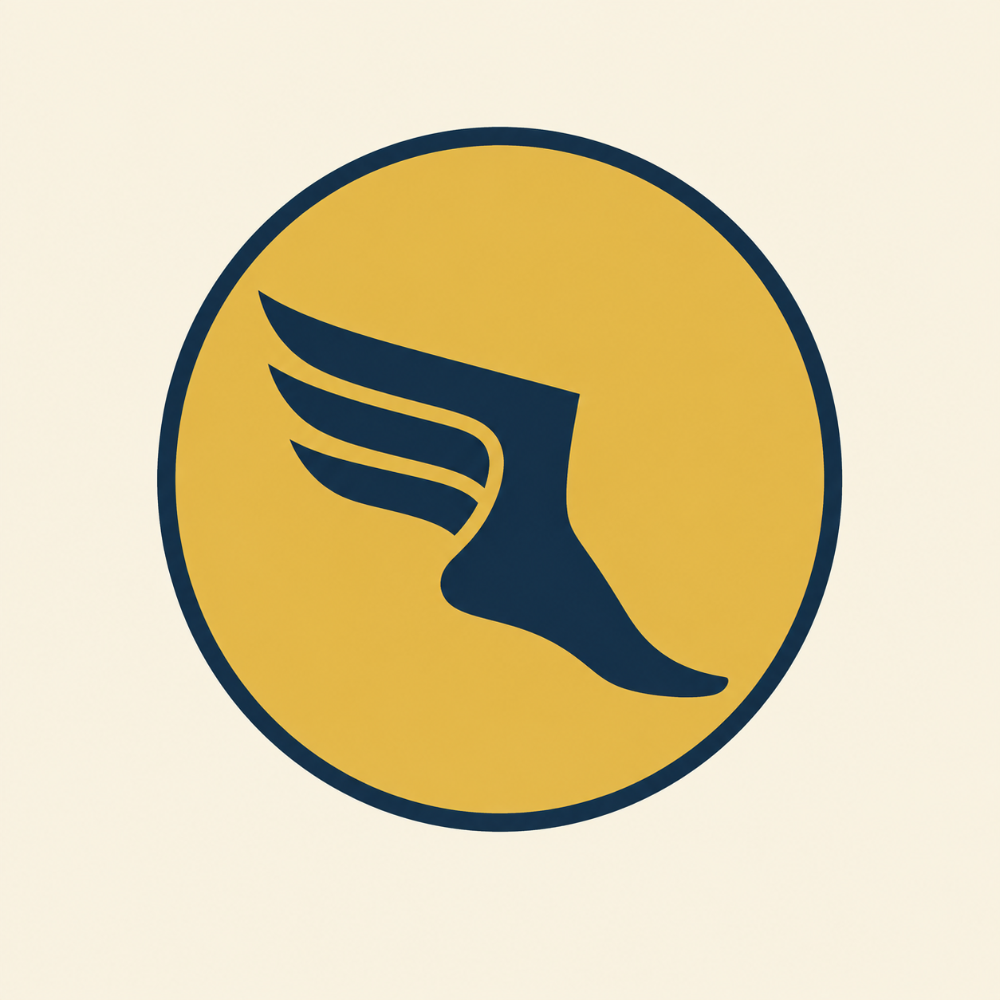

Identity studies · September 2026
Trotter / Logo explorations
12 marks based on midcentury travel symbols. A study in movement, discovery, and the joy of going places.

01Classic stride
A timeless runner in motion.

02Swept wing
Human movement meets flight.

03World salon
A refined travel-club emblem.

04Open stride
Movement with room to breathe.

05Orbital runner
A stride around the world.

06Sunrise stride
A bright start to the journey.

07Continental sprint
The spirit of the jet age.

08Luggage dash
Packed and ready to go.

09Passport seal
A small stamp of adventure.

10Traveling T
An initial with forward motion.

11Winged foot
A classic symbol of speed.

12Globe trot
The whole world, one step away.